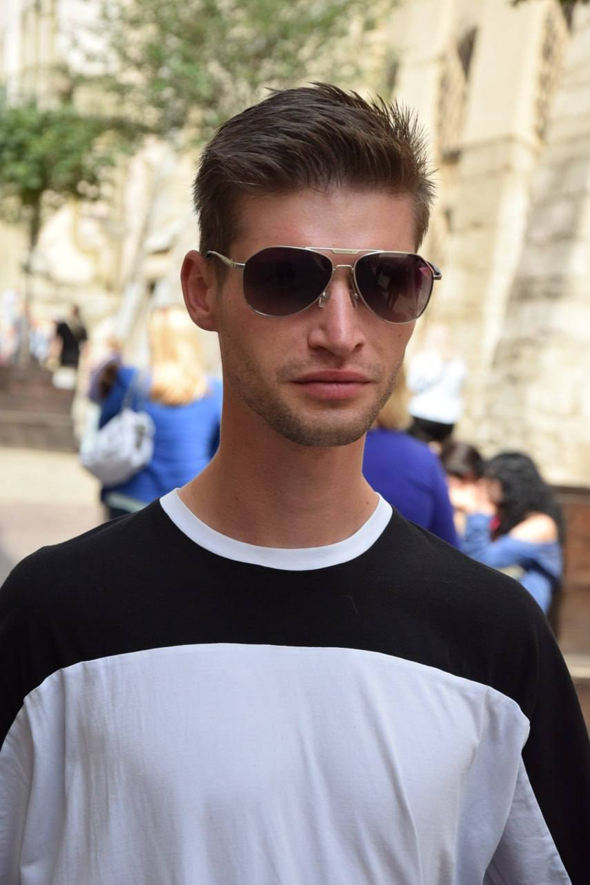

Народився 21 березня 1997 року в селі Балин, що на Хмельниччині. Навчався у звичайній сільській школі. Після школи перед ним постає питання вибору професії. Андрій зосередився на ЛПФК УАД тому, що йому «хотілося щось цікаве, «не заїжджене», не схоже з професією механіка чи юриста». «У Львівському поліграфічному коледжі я знайшов для себе дуже цікаву спеціальність», – говорить Андрій. Вступив він на ОПП «Обробка текстової, графічної та образної інформації», де здобув ґрунтовні знання.
Сам зізнається, що відмінником він не був, «не хапав зірок з неба», але коли почалися фахові предмети, то саме вони і привернули його увагу, а особливо те, що було пов’язано з макетуванням книги чи програмуванням.
Коли йдеться про студентське життя, він з усмішкою згадує творчі заходи. Особливо йому запам’яталися Андріївські вечорниці. Саме тоді відбулася одна з найкумедніших ситуацій: під час виступу він імпровізував і фактично змусив танцювати директорку Хомчак Лесю Миронівну. Говорячи про викладачів, він підкреслює: «до мене та до інших студентів всі викладачі ставилися чудово, як батьки».
Після закінчення коледжу у 2018 році Андрій пішов на термінову службу до Державної прикордонної служби України. Там він підписав свій перший контракт на 2 роки, який повністю відслужив. Після закінчення служби Андрій вирішив повернутися до цивільного життя і спробував себе у сфері поліграфії. До березня 2022 працював за фахом, проте після повномасштабного вторгнення його життя, як і мільйонів українців, знову змінилося – він повернувся до служби. З перших днів став на захист Батьківщини як доброволець і до сьогодні виконує свій обов’язок.
Про деталі служби він говорить стримано, не все можна розповідати відкрито. Лише зазначає, що його діяльність пов’язана з глибокою розвідкою на території рф. Командир Андрія дав йому позивний «Апостол», який спочатку йому не дуже подобався, та тепер він тільки з радістю розповідає про своє «друге ім’я».
Про побратимів воїн розповідає мало, але чесно. Каже, що сам є товариською людиною, може підтримати розмову, допомогти. Але з часом зрозумів важливу річ: не варто надто прив’язуватися. Андрій пояснює це просто: «Сьогодні ти тут, а вже завтра можеш бути на зовсім іншому напрямку». Саме тому він обрав для себе певну дистанцію: залишатися відкритим у спілкуванні, але не заводити надто глибоких прив’язаностей. І це не про байдужість, а про особистий комфорт.
Про реакцію близьких він говорить з теплотою на душі. Батьки прийняли його вибір спокійно. Особливо запам’яталися слова батька: «Ти живеш своє життя, а не чуже. Нароби такого, щоб можна було весело згадувати!» Ці слова він, здається, проніс із собою крізь роки. У майбутньому хоче створити свою сім’ю.
Андрій наголошує на необхідності підтримки військових, важливим є все: донат, дитячий малюнок, їжа, маскувальні сітки тощо. Це дуже сильна моральна, фізична підтримка та мотивація. А про мотивацію Андрій говорить несподівано просто. Його натхнення – це сон та звичайний відпочинок, коли можна «перезавантажитись».
Мрії Андрія Лоточинського залишаються незмінними з часів повномасштабного вторгнення: мир і достаток у кожній сім’ї. Додає, що «кожна війна, яка була, закінчується підписанням мирного договору. Тому навіть не знаю, який то мир має бути».
Наостанок Андрій Лоточинський звертається до нового покоління: «Живіть так, щоб було що згадати, і немає різниці що це: щось добре чи навпаки погане. Бо на помилках вчаться!»
Підготувала Анастасія Чапа, студентка спеціальності «Журналістика».